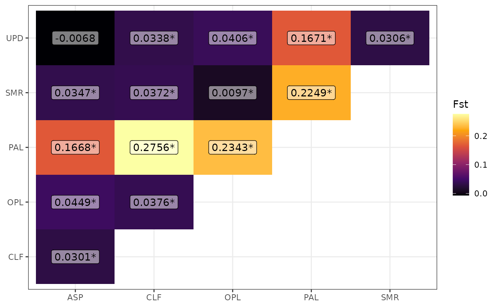
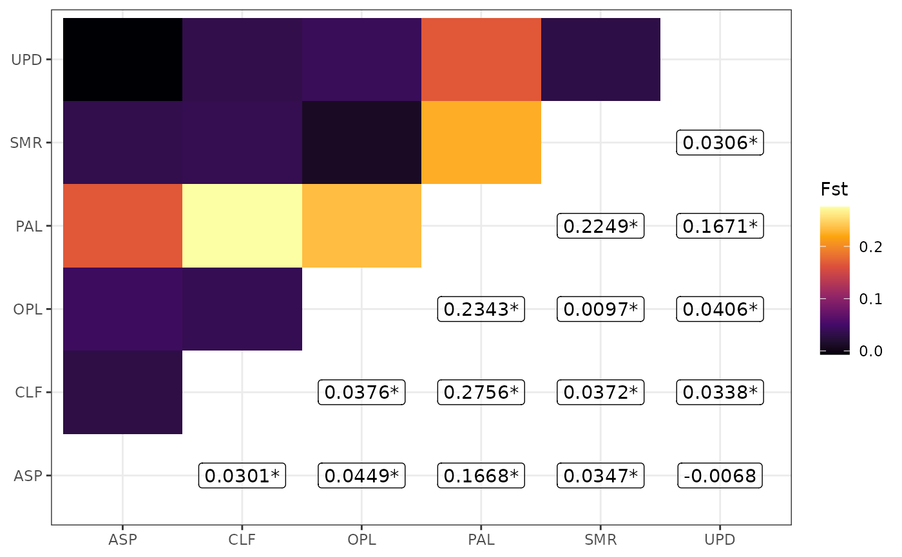
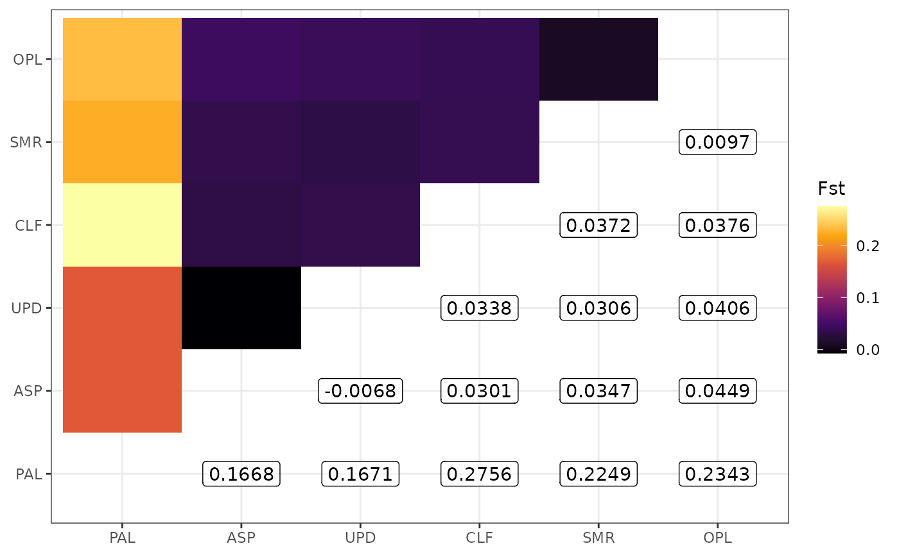
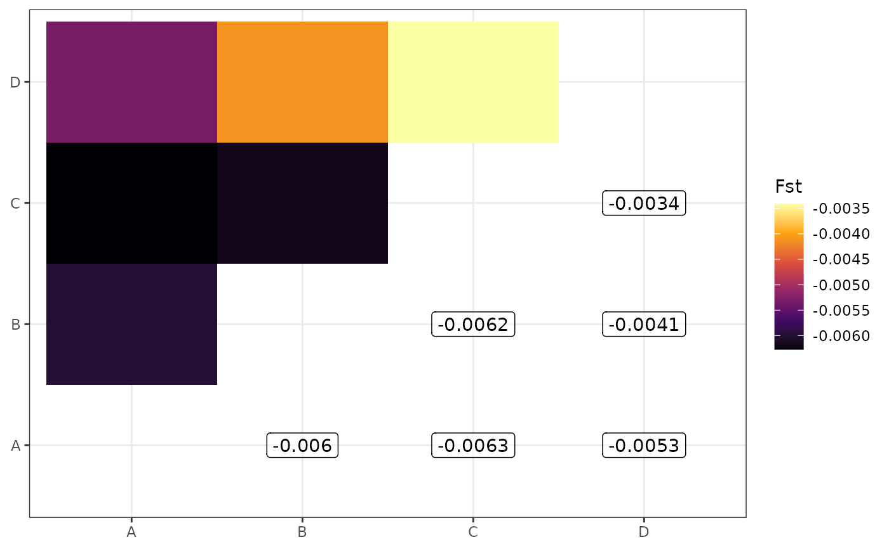

Make an heatmap of pairwise Fst values.
plot_pairwise_fst_heatmap.RdCreates a ggplot heatmap of pairwise Fst values
previously calculated via calc_pairwise_fst. Optionally prints
Fst values and marks those with significant p-values.
Usage
plot_pairwise_fst_heatmap(
x,
facets = NULL,
facet.order = NULL,
viridis.option = "inferno",
print_fst = TRUE,
mark_sig = FALSE,
lab_lower = FALSE
)Arguments
- x
snpRdata object.
- facets
character, default NULL. Categorical metadata variables by which to break up plots. Must match facets for which Fst data has been previously calculated via
calc_pairwise_fst. SeeFacets_in_snpRfor more details.- facet.order
character, default NULL. Optional order in which the levels of the provided facet should appear on the plot, bottom to top/left to right. If multiple facets are plotted, this must be a named list, named by facet, otherwise a character vector. See examples.
- viridis.option
character, default "inferno". Viridis color scale option to use. Other color scales may be substituted by appending the scale_color_continuous and scale_fill_continuous ggplot functions to the produced plot using the '+' operator.
- print_fst
logical, default TRUE. If true, will print Fst values on plot.
- mark_sig
numeric or FALSE, default FALSE. If numeric, Fst values with bootstrapped p-values below the given number will be marked with an '*'. Requires that bootstrapped p-values were calculated for the requested facets.
- lab_lower
logical, default FALSE. If TRUE, labels will be placed in the lower triangle instead of on top of the heatmap.
Examples
# Calculate pairwise fst
x <- calc_pairwise_fst(stickSNPs, c("pop", "fam"))
# plot
plot_pairwise_fst_heatmap(x, "pop")
# plot without FST values
plot_pairwise_fst_heatmap(x, "pop", print_fst = FALSE)
# bootstrap some p-values and plot
x <- calc_pairwise_fst(x, "pop", boot = 5)
## using a high alpha due low number of boots
plot_pairwise_fst_heatmap(x, "pop", mark_sig = .2)

# put labels in lower triangle
plot_pairwise_fst_heatmap(x, "pop", mark_sig = .2, lab_lower = TRUE)

# provide facet orders
plot_pairwise_fst_heatmap(x, c("pop", "fam"),
list(pop = c("PAL", "ASP", "UPD",
"CLF", "SMR", "OPL"),
fam = c("A", "B", "C", "D")),
print_fst = TRUE, lab_lower = TRUE)
#> $pop

#>
#> $fam

#>